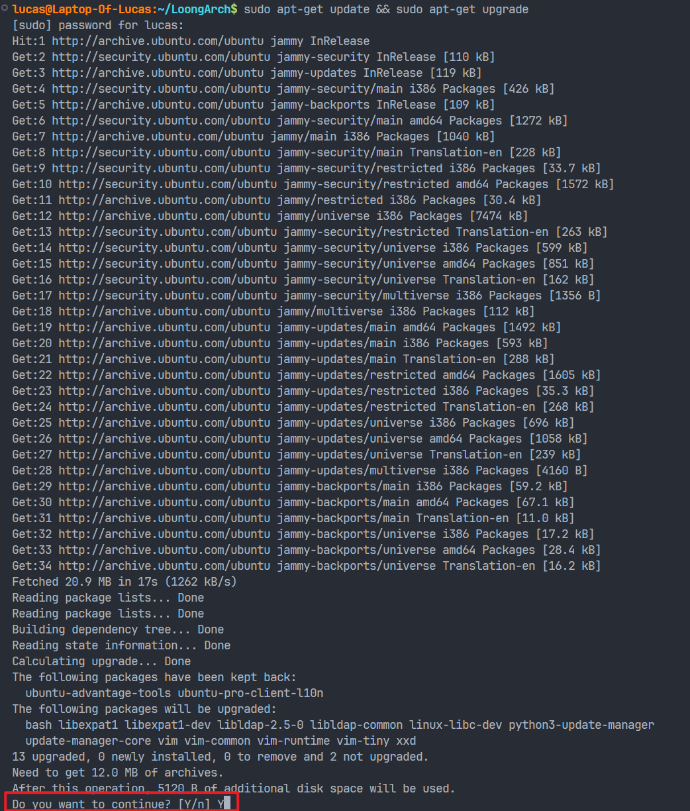
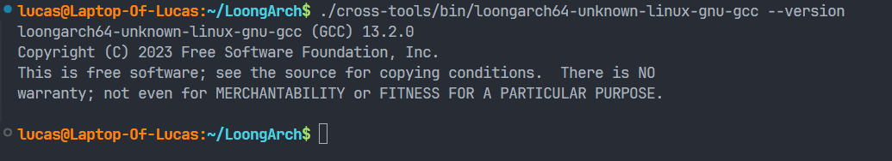

搭建 LoongArch 汇编实验环境 (Linux)
先前准备
注意：任何用到 sudo 指令的地方会提示输入密码，输入你自己的密码即可
-
首先在主目录下创建一个
LoongArch文件夹用来存放环境 -
然后进入
LoongArch文件夹
完成后如下图

编译安装 qemu-loongarch64
-
下载这里QEMU源码
完成后如下图

-
安装依赖
安装前可以先更新一下软件包（非必须）
这里会提示
Do you want to continue?，输入Y即可
然后安装依赖
安装好后如下图（这里已经安装好）

-
编译 QEMU
在
LoongArch目录下输入以下命令，进入build子目录
然后依次输入以下两条命令进行编译
完成后如下图（图太长了截不完）

输入如下命令
显示类似版本信息，则配置成功

-
建立符号链接到
usr/bin/目录下，方便以后使用
下载loongarch-gcc交叉工具链
-
先回到
LoongArch目录下完成后如下图

-
下载交叉工具的压缩包
wget https://github.com/sunhaiyong1978/CLFS-for-LoongArch/releases/download/8.1/CLFS-loongarch64-8.1.1-x86_64-cross-tools-gcc-libc.tar.xz完成后如下图

-
解压
如下图

输入如下命令
显示类似版本信息，则配置成功

-
建立符号链接到
usr/bin/目录下，方便以后使用sudo ln -s ~/LoongArch/cross-tools/bin/loongarch64-unknown-linux-gnu-gcc /usr/bin/loongarch64-unknown-linux-gnu-gcc如下图

编写测试（用任何编辑器即可，可以创建在任意目录下）
编写 hello_loongarch.S
# LoongArch Assembler program to print "Hello World!"
# to stdout.
#
# a0-a2 - parameters to linux syscall services
# a7 - linux syscall number
#
.global _start # Provide program starting address to linker
# Setup the parameters to print hello world
# and then call Linux to do it.
_start:
li.d $a0, 1 # 1 = StdOut
la $a1, helloworld # load address of helloworld
li.d $a2, 17 # length of our string
li.d $a7, 64 # linux write system call
syscall 0 # Call linux to output the string
# Setup the parameters to exit the program
# and then call Linux to do it.
li.d $a0, 0 # Use 0 return code
li.d $a7, 93 # Service command code 93 terminates
syscall 0 # Call linux to terminate the program
.data
helloworld: .ascii "Hello LoongArch!\n"
编译测试
如果按照先前步骤在 /usr/bin 设置好符号链接，只需要输入
运行测试
如果按照先前步骤在 /usr/bin 设置好符号链接，只需要输入
如图，成功打印输出，配置完成

参考资料
- LongArch指令集手册https://github.com/loongson/LoongArch-Documentation/releases/latest/download/LoongArch-Vol1-v1.10-CN.pdf
- LoongArch ABIhttps://loongson.github.io/LoongArch-Documentation/LoongArch-ELF-ABI-CN.html
- LoongArch 汇编参考https://github.com/loongson/la-asm-manual/releases/download/draft/la-asm-manual.pdf
- QEMUhttps://www.qemu.org/